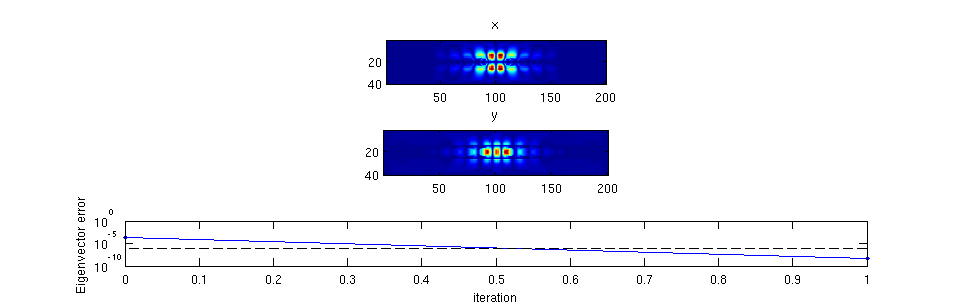

mode_optimization_example
Example of the optimization of an eigenmode.
Contents
Description
Starts with the eigenmode of a beam resonator, and then varies parameters to obtain a desirable eigenvalue.
% Make this a function instead of a script to allow for nested function definitions. function [] = optimize_2D_mode_example()
Create the initial structure
We use the add_planar and stretched_coordinates functions to create our structure as well as our simulation grid.
dims = [200 40 1]; % Size of the simulation. omega = 0.134; % Frequency of the simulation. lattice_spacing = 12; p = lattice_spacing * [1:6]'; % Starting structure parameters. epsilon = my_structure(dims, p);
Create the simulation parameters
% Create the s-parameters. [s_prim, s_dual] = stretched_coordinates(omega, dims, [10 10 0]); % Create the current source this is only used to get v_guess for the mode solver. J = {zeros(dims), zeros(dims), zeros(dims)}; J{2}(dims(1)/2, dims(2)/2 + 1, 1) = 1; % Permeability. mu = {ones(dims), ones(dims), ones(dims)}; % Get matrices for error checking. [A1, A2, m, e, b] = maxwell_matrices(omega, s_prim, s_dual, mu, epsilon, J); my_diag = @(z) spdiags(z(:), 0, numel(z), numel(z)); A = A1 * my_diag(m.^-1) * A2;
Get the initial guess of the eigenmode
We obtain the initial guess by performing a simulation.
v_guess = my_solver(omega, s_prim, s_dual, mu, epsilon, J); % Simulate. % Plot the initial structure and the intial eigenmode guess. my_plotter(e, dims); colormap gray; snapnow; my_plotter(v_guess, dims); snapnow; fprintf('v_guess error: %e \n', ... norm(A * v_guess - omega^2 * (e .* v_guess) - b) / norm(b));

v_guess error: 3.843427e-14
Run the eigenvalue optimization routinge
% Compute the eigenmode. [lambda, v, w] = my_eigensolver(s_prim, s_dual, mu, epsilon, v_guess); % snapnow; % fprintf('%e %e\n', norm(A*v - lambda*(e.*v))/norm(v), ... % norm(w' * A - lambda * (e.' .* w'))/norm(w)); % Compute the derivative. dl_de = -(lambda / (w' * (e .* v))) * (w' .* v.'); % Algebraic derivative. % Structural derivative. vec = @(z) [z{1}(:); z{2}(:); z{3}(:)]; for k = 1 : length(p) dp = zeros(size(p)); dp(k) = 1e-6; de = vec(my_structure(dims, p + dp)) - e; dl_dp(k) = dl_de * de; end dl_dp % Check derivative. fun = @(p) my_eigensolver(s_prim, s_dual, mu, my_structure(dims, p), v); fun(p) test_derivative(fun, dl_dp, lambda, p) % return % % % Compute the derivative, dlambda_dp. % dp = randn(size(p)); % dp = 1e0 * dp / norm(dp); % epsilon1 = my_structure(dims, p + dp); % % Get the perturbed eigenmode. % [lambda1, v1, w1] = my_eigensolver(s_prim, s_dual, mu, epsilon1, v); % % dlambda = lambda1 - lambda; % % Now try to predict it. % vec = @(z) [z{1}(:); z{2}(:); z{3}(:)]; % de = vec(epsilon1) - vec(epsilon); % dl = dl_de * de; % dlambda % dl % err = norm(dlambda - dl) / norm(dlambda)
dl_dp =
1.0e-08 *
Columns 1 through 4
-0.2310 - 0.0011i -0.0393 - 0.0005i -0.0075 + 0.0006i -0.0016 + 0.0000i
Columns 5 through 6
-0.0003 - 0.0001i -0.0000 + 0.0000i
ans =
0.0179 + 0.0000i
delta_empirical =
2.1553e-05 + 1.3791e-08i
delta_derivative =
2.0002e-11 - 2.1775e-14i
ans =
1.0000
 end function [err] = test_derivative(fun, df_dz, f0, z0) % Check a derivative. % Produce a random direction. dz = randn(size(z0)); dz = 1e-1 * dz / norm(dz); % Evaluate delta in that direction empirically delta_empirical = fun(z0 + dz) - f0 delta_derivative = df_dz * dz err = norm(delta_empirical - delta_derivative) / norm(delta_empirical); end
Source code for private functions.
function [epsilon] = my_structure(dims, hole_y_pos) % Private function to create a photonic crystal beam structure. my_shapes = {struct('type', 'rectangle', ... 'position', [0 0], ... 'size', [1e9 1e9], ... 'permittivity', 1), ... struct('type', 'rectangle', ... 'position', [0 0], ... 'size', [1e9 12], ... 'permittivity', 12.25)}; hole_radius = 4; for k = 1 : length(hole_y_pos) my_shapes{end+1} = struct('type', 'circle', ... 'position', [hole_y_pos(k) 0], ... 'radius', hole_radius, ... 'permittivity', 1); my_shapes{end+1} = struct('type', 'circle', ... 'position', [-hole_y_pos(k) 0], ... 'radius', hole_radius, ... 'permittivity', 1); end for k = [-1, 1] my_shapes{end+1} = struct('type', 'rectangle', ... 'position', [k*dims(1)/2 0], ... 'size', [20 2*hole_radius+1], ... 'permittivity', 12.25); end epsilon = {ones(dims), ones(dims), ones(dims)}; epsilon = add_planar(epsilon, 1e9, 1, my_shapes); end function [x] = my_solver(omega, s_prim, s_dual, mu, epsilon, J) % Private function to simulate. Used to get initial guess. % Get matrices. [A1, A2, m, e, b] = maxwell_matrices(omega, s_prim, s_dual, mu, epsilon, J); % Solve. my_diag = @(z) spdiags(z(:), 0, numel(z), numel(z)); x = (A1 * my_diag(m.^-1) * A2 - omega^2 * my_diag(e)) \ b; end function my_plotter(x, dims) % Private function to visualize the electric field. xyz = 'xyz'; colormap jet n = prod(dims); for k = 1 : 3 E{k} = reshape(x((k-1)*n+1 : k*n), dims); subplot(3, 1, k) imagesc(abs(E{k})'); axis equal tight; title(xyz(k)); end end function [lambda, v, w] = my_eigensolver(s_prim, s_dual, mu, epsilon, v_guess) % Private function to obtain the left- and right-eigenmode of the structure. % Get ingredient matrices and vectors. [A1, A2, m, e] = maxwell_matrices(0, s_prim, s_dual, mu, epsilon, epsilon); % Form full matrix. % Note that we actually form the matrix for F, where F = sqrt(e) E. dims = size(epsilon{1}); n = prod(dims); my_diag = @(z) spdiags(z(:), 0, numel(z), numel(z)); A = my_diag(e.^-0.5) * A1 * my_diag(m.^-1) * A2 * my_diag(e.^-0.5); v_guess = sqrt(e) .* v_guess; % Convert from F-field to E-field. % Compose function handles. mult_A = @(x) A * x; solve_A_shifted = @(lambda, b) (A - lambda * speye(3*n)) \ b; my_vis = @(lambda, v) my_plotter(v ./ sqrt(e), dims); % Find the eigenmode [lambda, v] = eigenmode_solver(mult_A, solve_A_shifted, my_vis, v_guess, 10, 1e-6); % Convert v from F-field to E-field. v = v ./ sqrt(e); % Form symmetrization matrix S to obtain right-eigenmode w. [spx, spy, spz] = ndgrid(s_prim{1}, s_prim{2}, s_prim{3}); [sdx, sdy, sdz] = ndgrid(s_dual{1}, s_dual{2}, s_dual{3}); S = my_diag([sdx(:).*spy(:).*spz(:); ... spx(:).*sdy(:).*spz(:); ... spx(:).*spy(:).*sdz(:)]); % Obtain right eigenvector. w = conj(S * v); end